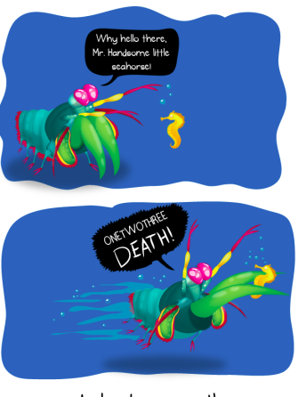

Fatos sobre o Stomatopoda
Os olhos do Stomatopoda
O Odontodactylus scyllarus possui olhos muito especiais tendo incriveis 16 (dezesseis) tipos de receptores de cor.

O crescimento
o Stomatopoda é um animal relativamente grande podendo ter de 15 a 30 cm (centimetros) de comprimento

O lado sombrio do Stomatopoda
embora o Stomatopoda seja considerado um animal muito belo devido suas cores chamativas e estilosas, ele não é o um dos animais mais violento do Mundo!!
As Garras quebra concha
ele possui duas garras raptoriais na parte frontal de seu corpo que server como meio de combate para esse pequeno amiguinho. ele usa essas "armas" para golpear outras criaturas a uma velocidade de 80km/h podendo arrancar partes dos seus corpos e manda-las longe e por tal motivo não é recomendado que seja criado em aquarios ja que pode facilmente quebrar seus vidros.